better than HODL
Voltaire makes institutional-grade crypto portfolios accessible via tokenized strategies
Problem // Crypto investors have few good options
- Most accessible investment products perform poorly
- Access to better investment solutions is restricted
| HODL | Passive Portfolios | Active Strategies | |||
|---|---|---|---|---|---|
| Performance | Bitcoin | Ethereum | MVIS CryptoCompare Index | Top 10 Market Cap | VisionTrack Composite Index |
| Return | 31.3% | 24.0% | 17.2% | 7.2% | 38.9% |
| Max DD | -73.0% | -90.4% | -98.2% | -86.7% | -39.0% |
| Return/risk | 0.43 | 0.27 | 0.09 | 0.08 | 0.99 |
| Access | Wallets, CEXs, DEXs and ETFs | DIY portfolio, Bitwise 10 Index |
| ||
| Fees | none |
|
| ||
Solution // Better-performing strategies + portfolios on one platform
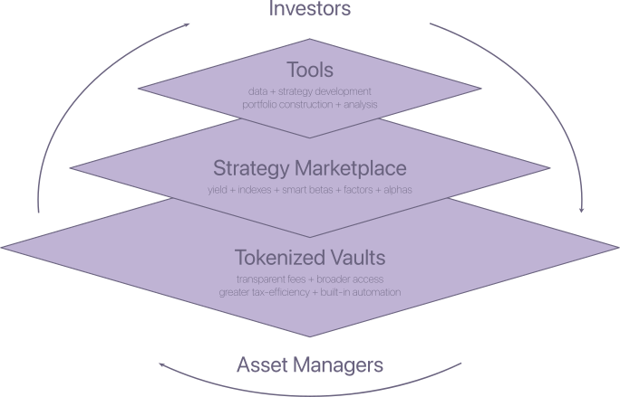
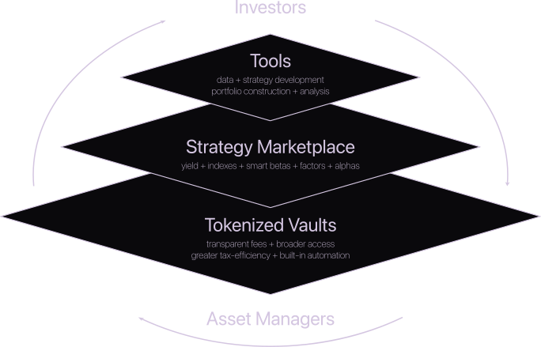
How it works // From HODL to better than HODL in a few clicks
- Higher returns for the same risk
See Appendix for more on BTC+, BitGold and Smart Portfolio
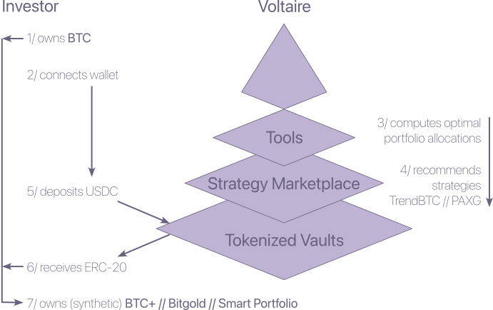
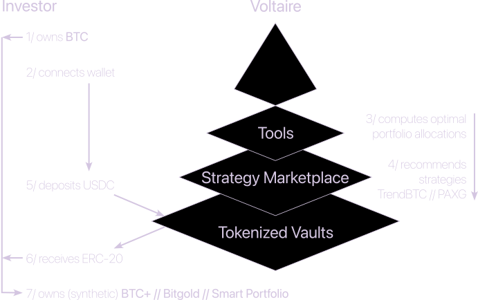
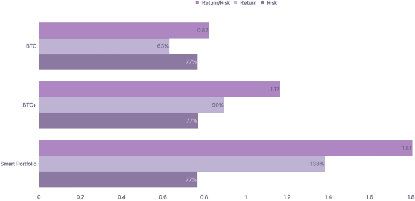
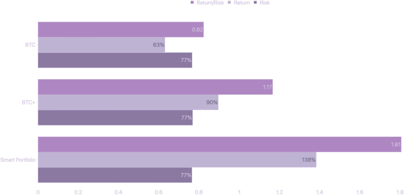
Opportunity // Over $1.5T of Bitcoin is held by HODLers
- Voltaire’s BTC+ vaults offer higher returns with the same risk
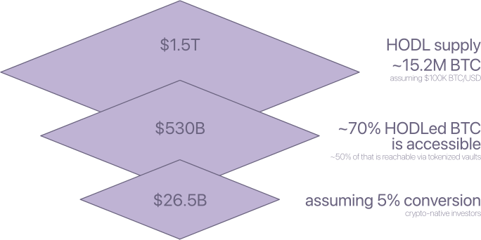
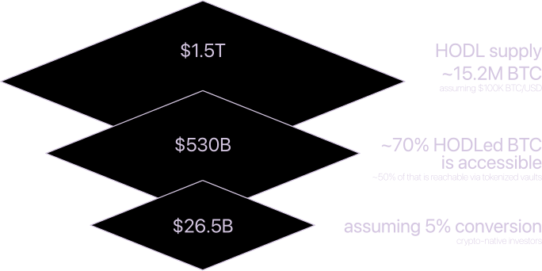
High-capacity beta + alpha strategies with scalable TVL
- Competitive pricing, aligned incentives, and scalable, network-effect-driven margins
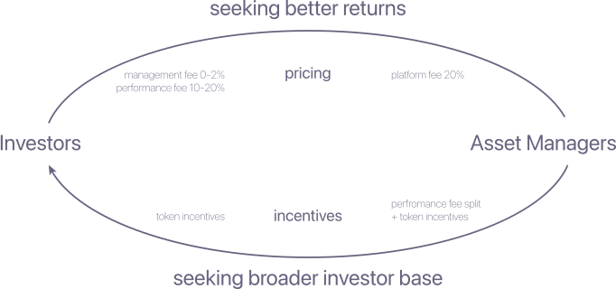
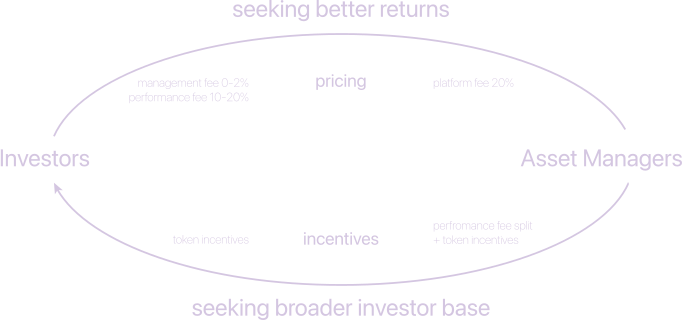
Competitive Landscape // Bridging the gap between TradFi and DeFi
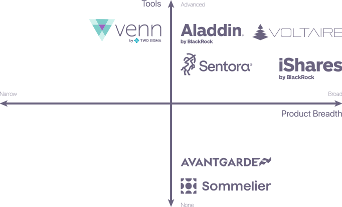
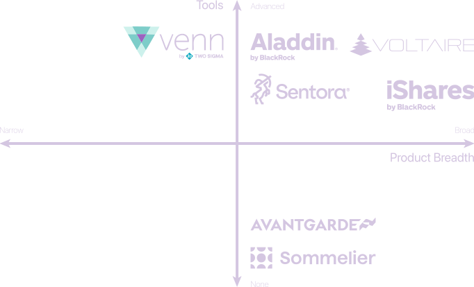
Why Now? // A structural change in onchain asset management
Recent technical innovations
- perps + RFQs + ERC-4626 vaults
- next-gen asset management infra
- systematic long/short portfolios onchain
Institutional adoption
- RWA + fund tokenization
- $10T+ by 2030
Regulatory breakthroughs
- Europe » MiCA framework
- USA » approval of crypto ETFs + GENIUS act
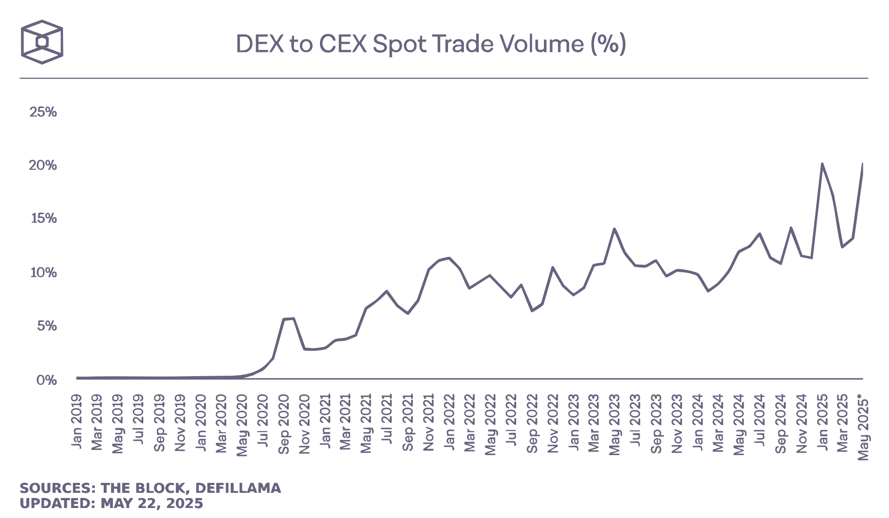
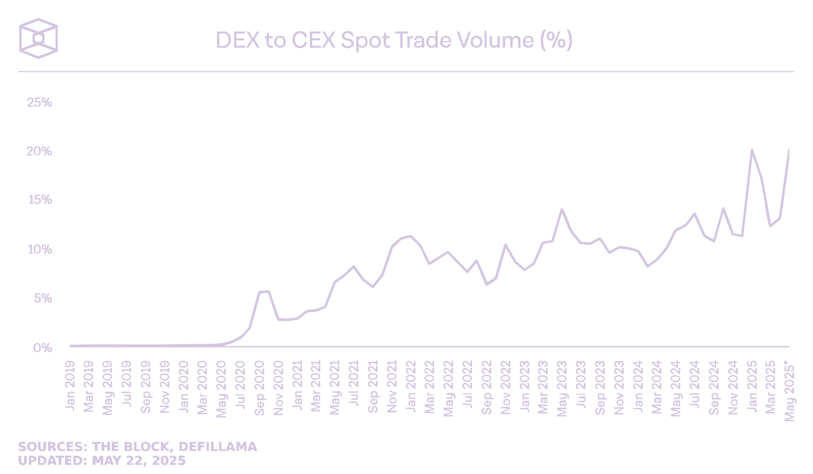
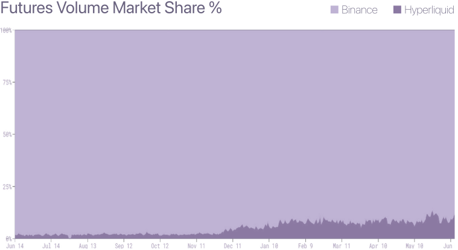
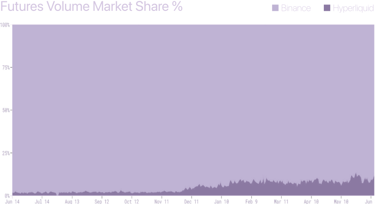
Go-To-Market Strategy // DeFi >> CeFi >> TradFi
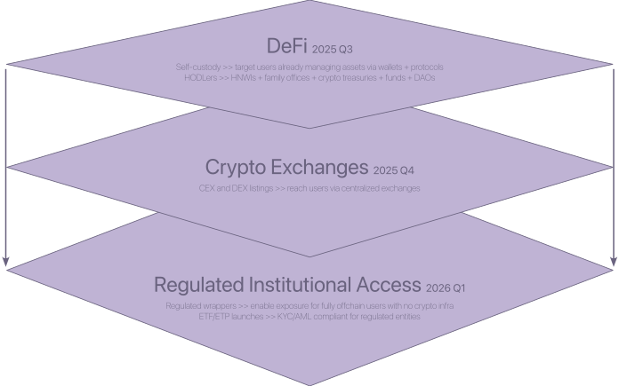
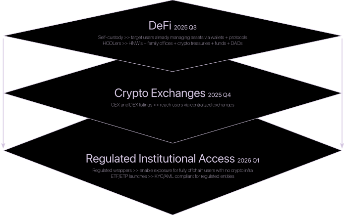
Appendix
Smart + Accessible Digital Asset Portfolios
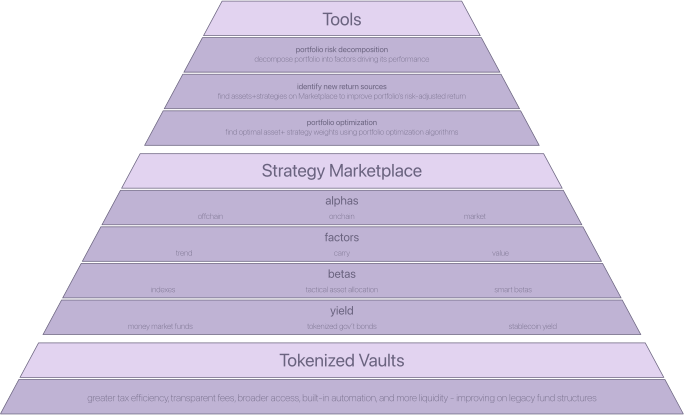
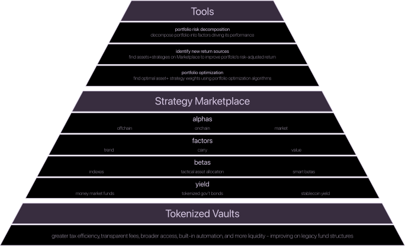
Strategy Marketplace // a roadmap
Seeding with high quality Betas and crowdsourcing uncorrelated Alphas
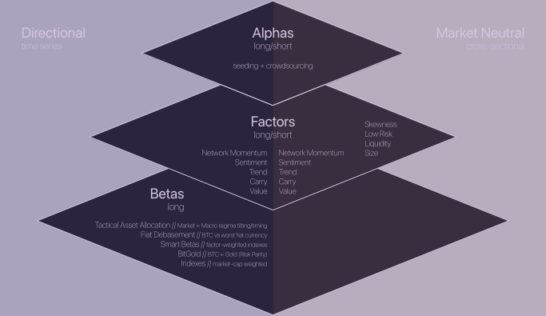
Tools
CryptoDataPy
one easy-to-use interface for all digital asset data pipelines
- Market >> market prices of varying granularity (e.g. tick, trade and bar data, aka OHLC), for spot, futures and options markets, as well as funding rates
- Onchain >> network health and usage data, circulating supply, asset holder positions and cost-basis
- Offchain >> news, social media, developer activity, web traffic and search for project interest and sentiment, as well as traditional financial market and macroeconomic data
FactorLab
Quantopian + Barra + Venn/Aladdin for digital assets
- Construction of alpha + risk factors >> Barra for digital assets
- Macro risk factors >> growth, inflation, real rates, credit, currency, liquidity and tail risk
- Style factors >> momentum, yield, value, size, growth, volatility, liquidity, sentiment, etc.
- Portfolio risk decomposition >> Aladdin/Venn for digital assets
- Strategy development >> AlphaLens (Quantopian) for digital assets
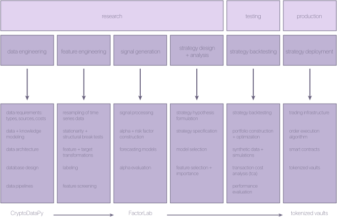
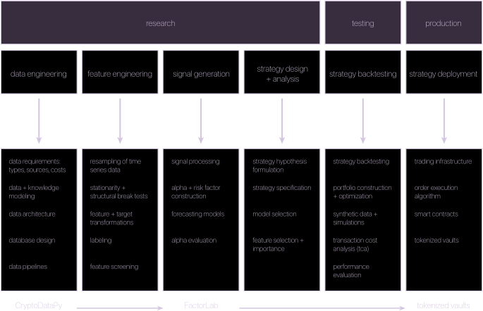
Tokenized Vaults
![Enabling systematic indexes, smart betas, factors strategies and portable alphas onchain: an allocator and a manager around a vault (ERC-4626, 7540), with 1/ deposit, 2/ signal, 3/ execute (async) through an execution engine with intent-based routing to spot, perps and RWA, 4/ mint tokens (async) and 5/ fees. Financing: vault tokens are transferable and marginable, improving capital efficiency. Strategy composability: combine spot + perps + RWA positions, offering yield-stacking on excess collateral.](assets/figures/light/tokenized-vaults.svg)
![Enabling systematic indexes, smart betas, factors strategies and portable alphas onchain: an allocator and a manager around a vault (ERC-4626, 7540), with 1/ deposit, 2/ signal, 3/ execute (async) through an execution engine with intent-based routing to spot, perps and RWA, 4/ mint tokens (async) and 5/ fees. Financing: vault tokens are transferable and marginable, improving capital efficiency. Strategy composability: combine spot + perps + RWA positions, offering yield-stacking on excess collateral.](assets/figures/tokenized-vaults.svg)
Tokenized Vaults vs. Traditional Fund Structures
| Fund Structure | Limited Partnerships (Hedge Funds) | Separately Managed Accounts | Exchange Traded Funds | Tokenized Vaults |
|---|---|---|---|---|
| Set-Up + Control | slow + expensive
| moderate
| slow + expensive
| fast + cheap
|
| Execution + Instrument Access | full can access all instruments: futures, options, swaps, leverage, shorting, private deals | moderate
| limited
| full access to broad asset universe, perpetual futures, spot and onchain leverage |
| Distribution + Liquidity | limited + illiquid
| moderate
| wide + liquid
| wide + liquid
|
| Trust + Compliance | moderate
| high
| high
| moderate
|
Smart Portfolio Construction
Smart Portfolio Construction starts by capturing the low-hanging fruit like long-only betas, and moving up the pyramid to the higher-hanging fruits like factors, followed by alphas.
Most of the world’s top institutional investors understand the importance of combining multiple uncorrelated return streams, e.g. Bridgewater with All Weather + Pure alpha, AQR’s factor investing strategies, and Blackrock’s line of investment products (iShares).
This approach is poorly understood and under-utilized by digital asset investors. Yet, it leads to both consistent and high risk-adjusted returns.
Voltaire’s platform makes it simple and easy to follow this approach with investment strategies like BTC+, BitGold and ultimately the Smart Portfolio.
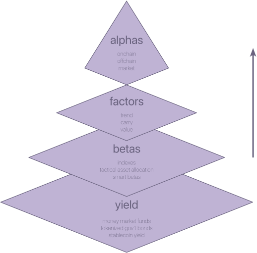
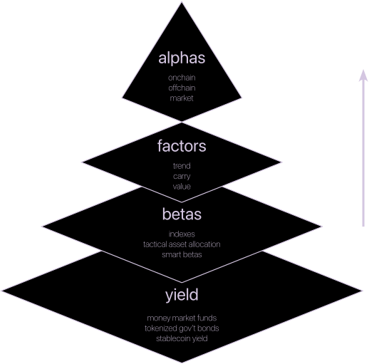
BitGold, BTC+ and Smart Portfolio
BTC+ enhances passive (HODL) Bitcoin exposure by overlaying portable alpha >> preserving the long-term upside of BTC while adding a trend-following overlay for downside protection and alpha generation
BitGold blends Bitcoin and gold using leverage and portfolio optimization to create a more resilient and efficient store-of-value asset
The Smart Portfolio approach involves “stacking” return streams on top of each other in the Alpha-Beta pyramid, e.g. a simple BitGold + TrendBTC stack can deliver superior risk-adjusted returns relative to HODL BTC
About this prototype
A design prototype of the dormant Voltaire concept: the content of its 2025 Framer page, implemented by ASK on design-system-ASK under Voltaire's own identity. No investment service or signup is offered, and the page collects nothing. Its statements are the 2025 presentation's, shown as they were written.
The design system supplies the interface, unchanged: the typefaces, palette and gradients, the page shell and its navigation, the compact actions, the document register with its comparison tables, and the light and dark themes. Voltaire supplies its identity and its content: the mark and wordmark, the presentation's words, and its figures, placed as the 2025 source vectors.
Design system
20 design-system-ASK files, copied unchanged; VENDOR.md lists each with its donor commit and SHA-256
Content
the 2025 Framer page's text, and the 2025 pitch deck's comparison tables with their ratings
Figures
the 2025 source files; FIGURES.md lists each one
The code and reusable interface implementation are offered under the Apache License 2.0. Voltaire identity artwork created by Andrew S Klug // ASK, including logos and wordmark artwork, is excluded from that license. All rights reserved. The presentation's content and figures keep their own rights and are not covered by that license. Clone the repository and open index.html, or serve the folder: README.md says which files are Voltaire's to edit and which are vendored.